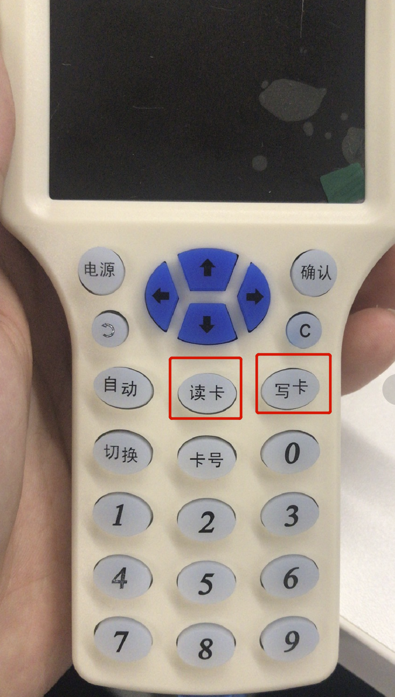

由于最近有一个关于门禁的测试项目，所以正好了解了一下关于门禁的相关安全问题，测试目标使用的是ID卡门禁，所以记录一下关于ID卡的安全点。
ID卡简介
低频ID卡(identification card，身份识别卡)，是一种不可写入的感应卡，每张ID卡有一个全球唯一的芯片编码。每张ID卡有一个全球唯一的芯片编码。

市面上使用比较多的有EM4100和T5577两种，多数为门禁，考勤等系统内使用。
两种的特性和区别：
1 | EM4100： |
ID卡工作过程
ID卡的工作过程可以分为下面几部：
1 | 1、ID卡阅读器将载波信bai号经天线向外发送，载波频du率为125KHZ（THRC12） |
ID卡的常见利用工具
读写器
比如我使用的就是这个在淘宝上买的ID卡读写器，可以直接写入ID，也可以复制ID卡
低频白卡


像这两种卡片都可以进行复制和写入。
Proxmark3
Proxmark3是一款功能非常强大的RFID工具，但是价格相对较高，因为我只测试ID类型的卡，就没有买，直接买了一个淘宝上的读卡工具

实战中的ID卡安全
常见门禁系统架构
一般情况下的门禁系统主要是由服务器数据库还有控制器、门锁、门锁读卡器等组成，一般都会集成了上班打卡和门禁甚至是食堂等多种功能：

对于门禁的读卡器和联网控制器所使用的协议有RS232/RS485/WG64等串行标准协议，可以参考下面的设计框架：

利用思路
可以入手的点有：
内部的门禁系统本身的漏洞
1、门禁管理系统的WEB/终端漏洞
门禁系统的开发公司一般情况下可能不会太在意自身系统的安全性，如果发现了内网中的门禁管理系统的WEB后台，那么久可以尝试挖掘相关的WEB漏洞，进而控制系统，进行修改卡权限等操作。
2、数据库漏洞
门禁系统可能数据库系统的端口对外开放，并存在弱口令，如果能够爆破或者到检索到高权限账号密码，那么就可以直接写入卡权限、修改余额，甚至可以通过数据库获取操作系统权限，并且有可能拿到管理员HASH值（不属于门禁卡范畴不再说明）
3、操作系统漏洞
比如MS17-010这样的RCE漏洞，或者是RDP等弱口令，通过系统权限然后控制了门禁管理系统。
卡的自身安全性
1、复制卡
应用场景：能够接触到别人的卡（放在桌子上，或者口袋里），或者是拿到别人的一个卡，然后直接复制一个拥有相同权限的卡


2、写入高权限的卡ID
常见场景：
1 | a) 有数据库权限，就可以拿一张白卡，将白卡写入高权限的CardID,就可以伪造一张别人正在用的卡 |
比如通过上面门禁系统的漏洞，拿到了系统权限或者是数据库权限，就可以修改卡的权限，拿测试遇到的一个例子说明，先是拿到了一个数据库的权限，然后通过修改卡ID进行权限提升，比如这里插入一个卡号为12345的卡授予了11111门禁的权限：
1 | insert into CardDB (CardID,权限字段) values ('12345','11111'); |